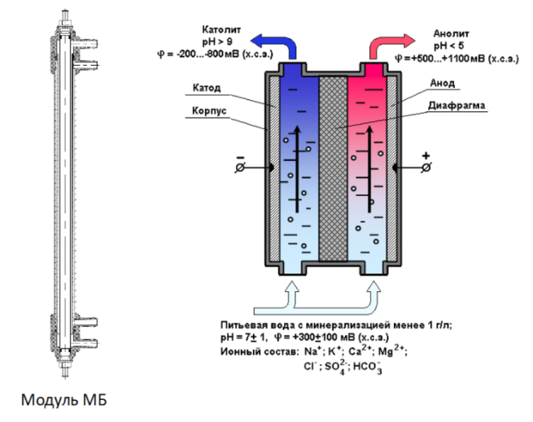

ТЕХНОЛОГИИ ПРИРОДЫ В РУКАХ ЧЕЛОВЕКА
Компания ООО «ЭМЕРАЛЬД ЭКОТЕХНОЛОГИИ» осуществляет разработку и серийное производство нового
поколения электрохимических систем, основанных на технологии электрохимической активации (ЭХА).
Основные виды производимого оборудования:
1. EMERALD HOME – оборудование для обеззараживания, очистки и кондиционирования воды;2. EMERALD
PRO — оборудование для получения экологически чистого дезинфицирующего раствора Анолит АНК
СУПЕР;3. EMERALD HYDRO — оборудование для получения чистого водорода и кислорода.
Научно-производственную деятельность ООО «ЭМЕРАЛЬД ЭКОТЕХНОЛОГИИ» ведет в партнерстве с
Институтом Электрохимических Систем Витольда Бахира (г. Москва), являющимся основным мировым
научным центром в области электрохимической активации. Многолетний опыт и современные открытия
наших экспертов, а также непосредственное участие самого В.М. Бахира, д.т.н., профессора,
позволяют реализовывать в установках EMERALD наилучшие доступные технологии в области ЭХА. По
этой причине, многие установки EMERALD нового поколения по своим техническим характеристикам не
имеют аналогов в мире.
Научно-производственная база компании ООО «ЭМЕРАЛЬД ЭКОТЕХНОЛОГИИ» расположена в г. Владимир
(Россия).
Написать
ЭЛЕКТРОХИМИЧЕСКАЯ АКТИВАЦИЯ
Сущность технологии электрохимической активации (ЭХА) заключается в электрохимическом синтезе и последующем использовании активированных (метастабильных) веществ вместо традиционных стабильных реагентов

Электрохимические модули МБ
Модули обмениваются с жидкостями только электронами — отбирают их в анодной камере и вводят в катодной. Поэтому технология ЭХА является безопасной и экологически чистой технологией по принципу: «ЭФФЕКТ ЕСТЬ, РЕАГЕНТОВ НЕТ».
- Технология ЭХА позволяет за счет электрохимического воздействия активировать как жидкости (пресную и дистиллированную воду, водные растворы органических и неорганических соединений, спирты, нефть, газовый конденсат, бензин, керосин, минеральное масло, кулинарный жир, молоко, сыворотку, плазму крови), так и газы (гелий, аргон, водород, оксид углерода, сероводород, кислород, азот, хлор, диоксид хлора, озон, метан, пропан, бутан).
- Свойства, которые начинают проявлять активированные жидкости и газы, используются в различных практических целях!
- Эффективно активировать жидкости и газы стало возможным за счет создания электрохимических модулей Бахира (МБ) с керамической диафрагмой. Модули МБ состоят из двух проточных камер: анодной и катодной.
- Именно в этих камерах под воздействием положительного и отрицательного тока на аноде и катоде повторяются уникальные и подсказанные природой процессы безреагентного управления физико-химическими свойствами жидкостей и газов.